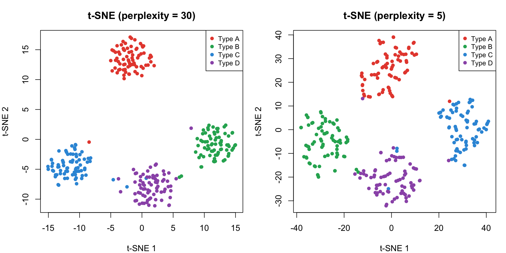
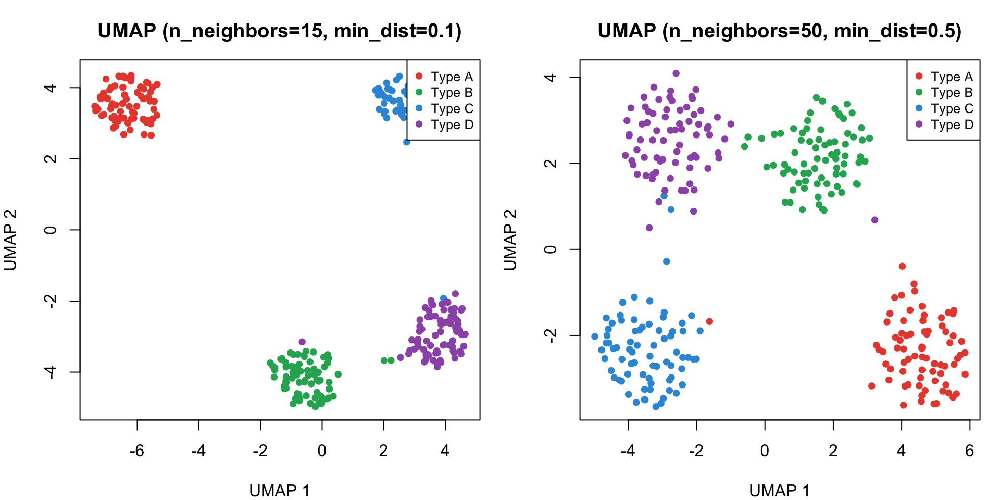
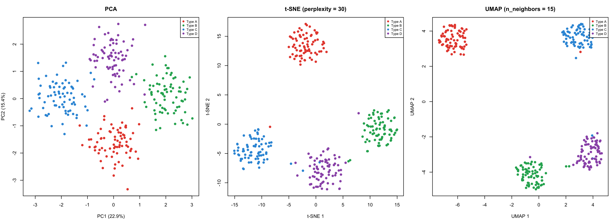
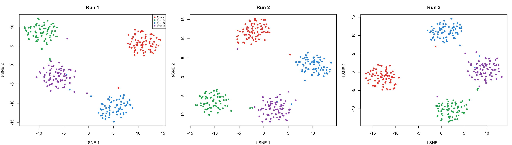
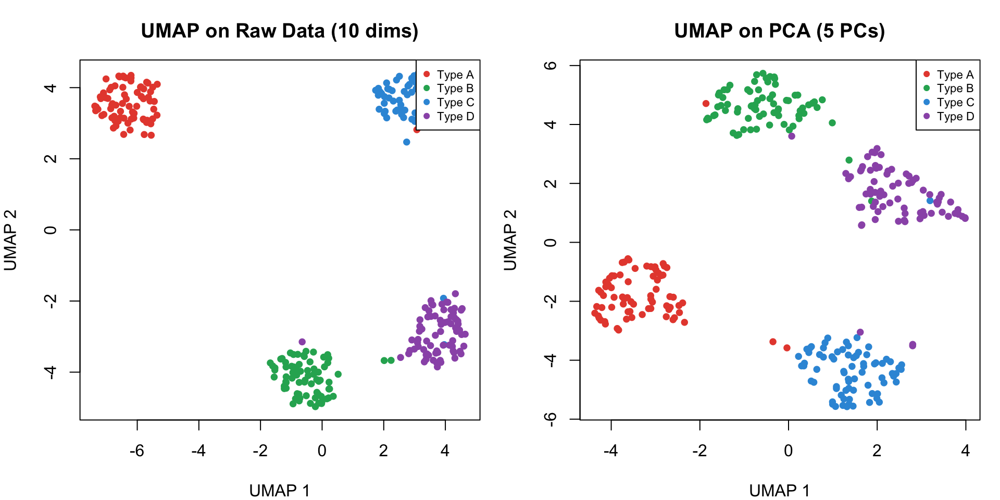

library(Rtsne)# Run t-SNE with default perplexitytsne_result <-Rtsne(sim_df[, 1:n_dims], perplexity =30, dims =2, verbose =FALSE,check_duplicates =FALSE)# Store resultstsne_df <-data.frame(tSNE1 = tsne_result$Y[, 1],tSNE2 = tsne_result$Y[, 2],CellType = sim_df$CellType)head(tsne_df)
tSNE1 tSNE2 CellType
1 -3.5352324 12.62404 Type A
2 -1.4933605 14.11968 Type A
3 -2.2156270 12.13286 Type A
4 -2.1037805 13.06669 Type A
5 -0.2257657 16.02497 Type A
6 -2.8566892 10.16896 Type A

What t-SNE reveals:
The clusters are well-separated visually — t-SNE excels at pulling apart groups
Perplexity = 30 gives a balanced view of local structure
Perplexity = 5 focuses on very local neighborhoods — may fragment clusters or create spurious sub-groups
Critical warnings:
The distances between clusters are NOT meaningful — don’t conclude Type A is “closer to” Type B based on the plot
Cluster sizes don’t reflect the number of points — all groups have 75 cells but may appear different sizes
Re-running without set.seed() will produce a different layout (stochastic algorithm)
Perplexity = 50: Broader view — clusters may start merging
Best practice: Always run t-SNE at multiple perplexity values and compare. No single setting tells the full story. A good rule of thumb is perplexity between sqrt(n)/2 to sqrt(n), but always explore.
library(umap)# Run UMAP with default settingsumap_config <- umap.defaultsumap_config$n_neighbors <-15umap_config$min_dist <-0.1umap_config$random_state <-42umap_result <-umap(sim_df[, 1:n_dims], config = umap_config)# Store resultsumap_df <-data.frame(UMAP1 = umap_result$layout[, 1],UMAP2 = umap_result$layout[, 2],CellType = sim_df$CellType)head(umap_df)
UMAP1 UMAP2 CellType
1 -6.955577 3.696915 Type A
2 -6.303176 3.001904 Type A
3 -6.802568 3.549522 Type A
4 -6.824349 3.508767 Type A
5 -5.804678 3.115610 Type A
6 -6.749364 3.195066 Type A

What UMAP shows:
Clusters are clearly separated with good visual structure
# All three methods on the same dataset# PCA, t-SNE, UMAP already computed above# Combine for comparisoncomparison <-data.frame(Method =rep(c("PCA", "t-SNE", "UMAP"), each =nrow(sim_df)),Dim1 =c(pca_scores$PC1, tsne_df$tSNE1, umap_df$UMAP1),Dim2 =c(pca_scores$PC2, tsne_df$tSNE2, umap_df$UMAP2),CellType =rep(sim_df$CellType, 3))

All three methods identify the same 4 clusters, but with different visual characteristics:
PCA: Clusters partially overlap because it projects along linear axes of maximum variance. PC1 vs PC2 captures only part of total variance — remaining structure is in higher PCs. Distances are directly interpretable.
t-SNE: Clusters are pulled apart into well-separated “islands.” Visually dramatic, but inter-cluster distances are meaningless. Cluster sizes may not reflect true group sizes.
UMAP: Similar to t-SNE but tends to preserve more of the relative positioning between clusters. The overall topology is more consistent across runs.
Key takeaway: These methods are complementary, not competing. Use PCA for quantitative analysis and feature selection, t-SNE/UMAP for visualization.
# Demonstrate stochastic nature of t-SNE# Run t-SNE 3 times WITHOUT setting seedtsne_runs <-lapply(1:3, function(i) { res <-Rtsne(sim_df[, 1:n_dims], perplexity =30, dims =2, verbose =FALSE, check_duplicates =FALSE)data.frame(tSNE1 = res$Y[, 1], tSNE2 = res$Y[, 2], CellType = sim_df$CellType, Run =paste("Run", i))})tsne_runs_df <-do.call(rbind, tsne_runs)

Same data, same parameters, different results!
Each run produces a different spatial arrangement because t-SNE (and UMAP) use random initialization and stochastic optimization. The clusters are the same, but their positions and orientations change.
PCA does not have this issue — it is fully deterministic.
Performance
Scalability and performance
Method
Scalability
Complexity
Why?
PCA
Excellent
O(np2) or O(n2p)
Linear algebra; efficient SVD algorithms
t-SNE
Poor for large n
O(n2)
Pairwise comparisons; Barnes-Hut helps but still slow
UMAP
Good
O(n1.14) approx
Approximate nearest neighbor search; scales well
For a typical scRNA-seq dataset with 50,000-500,000 cells, UMAP is usually the practical choice for visualization. PCA is always run first as a preprocessing step.
# Standard workflow: PCA first, then UMAP on top PCs# Step 1: PCA (already done)n_pcs <-5# Keep top 5 PCs (our data only has 10 dims)pca_input <- pca_result$x[, 1:n_pcs]# Step 2: UMAP on PC spaceumap_config_pipe <- umap.defaultsumap_config_pipe$n_neighbors <-15umap_config_pipe$min_dist <-0.1umap_config_pipe$random_state <-42umap_on_pca <-umap(pca_input, config = umap_config_pipe)# Compare: UMAP on raw data vs UMAP on PCAumap_raw_df <- umap_df # already computedumap_pca_df <-data.frame(UMAP1 = umap_on_pca$layout[, 1],UMAP2 = umap_on_pca$layout[, 2],CellType = sim_df$CellType)

Why PCA before UMAP?
Noise reduction: PCA removes uninformative variance (noise in genes that don’t distinguish cell types)
Speed: UMAP runs faster on 30-50 PCs than on 20,000 genes
Denoising: Suppresses technical noise without distorting major biological patterns
In our 10-dimensional example, the difference is subtle. But with real scRNA-seq data (20,000+ genes), the PCA preprocessing step dramatically improves both speed and quality.
This is standard in tools like Seurat and Scanpy:
# Seurat workflowobj <-RunPCA(obj, npcs =50)obj <-RunUMAP(obj, dims =1:30) # UMAP on first 30 PCs
When to Use Each Method
Decision guide
PCA
Linear relationships dominate
Need interpretable axes
Preprocessing / noise reduction
Feature selection via loadings
Very large datasets
Full reproducibility required
Always run first
t-SNE
Small to medium datasets
Focus on local / fine-grained cluster structure
Exploring results of complex models
When local relationships matter most
Have time to explore perplexity settings
UMAP
Large datasets
Balance of local and global structure
General-purpose visualization
Default choice for scRNA-seq
Need faster computation than t-SNE
Want more consistent global topology
Summary
Summary table
PCA
t-SNE
UMAP
Linear/Non-linear
Linear
Non-linear
Non-linear
Global vs Local
Global
Local
Local + Global
Scalability
Excellent
Limited
Good
Reproducibility
Deterministic
Stochastic
Stochastic
Interpretability
High (loadings, variance)
Low
Low
Distances meaningful?
Yes
No
Partially
Hyperparameters
# of PCs
Perplexity, LR, iterations
n_neighbors, min_dist
Typical use
Preprocessing + analysis
Visualization
Visualization
Key takeaways
PCA is your workhorse for dimensionality reduction as a preprocessing step — fast, interpretable, and reproducible
t-SNE and UMAP excel at visualization of complex, non-linear structure
UMAP has largely replaced t-SNE in practice due to better scalability and global structure preservation
Don’t over-interpret distances between clusters in t-SNE/UMAP plots
Always set a random seed when using stochastic methods
Combine methods — use PCA first, then UMAP/t-SNE for visualization
Explore hyperparameters — a single embedding is never the full story
References and resources
Papers:
Jolliffe, I.T. & Cadima, J. (2016). Principal component analysis: a review. Phil. Trans. R. Soc. A, 374: 20150202.
van der Maaten, L. & Hinton, G. (2008). Visualizing Data using t-SNE. JMLR, 9: 2579-2605.
McInnes, L., Healy, J. & Melville, J. (2018). UMAP. arXiv:1802.03426.